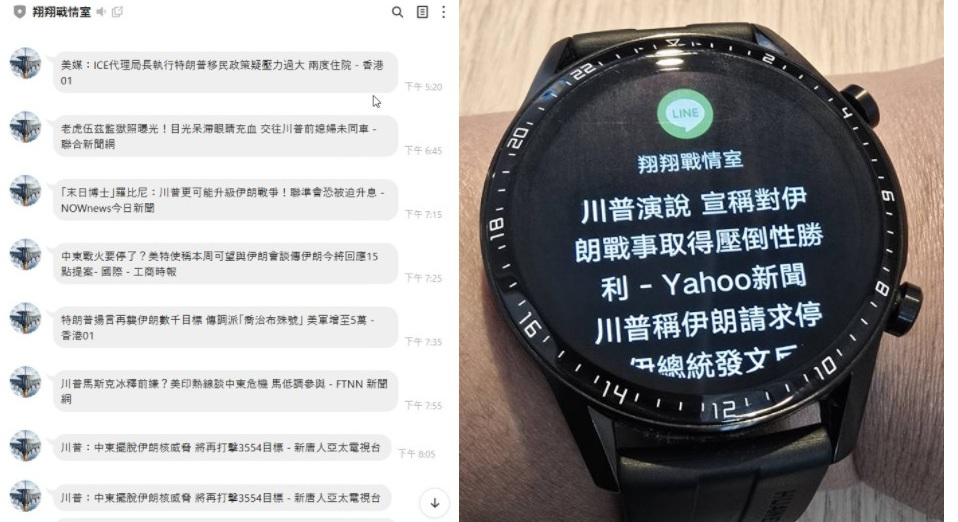

🚀 目前動態
目前於職訓局進修 【Python人工智慧與數據分析班】，預計 2026/04/23 結業。掌握技術包含 Python 爬蟲、SQL Server ETL、SSAS/SSRS 及 Power BI 資料分析。
📂 查看專案簡報 (PPT)近期開發專案 (做中學成果)
1. 大數據銷售分析 (Power BI)
結訓專案：針對大型銷售數據進行清洗與建模，建立 Star Schema 架構，產出營收 KPI、成長率及客戶行為分析儀表板。
Power BI
資料建模
DAX
📊 查看 Power BI 互動報表
2. 美國總統動態即時監控系統 (BI + AI 整合)
為了掌握即時趨勢消息，我建立了一個全自動化的數據處理流程：
- 使用 Python 自動爬取新聞並寫入 Azure SQL Database。
- 進行 NLP 情感分析 並透過 LINE Notify 即時推播。
【實測成果】LINE 群組接收與智慧手錶同步推播

關於我
您好，我是勝翔。定居台中，育有一子一女。電機工程背景出發，擁有單晶片8051、C語言、PLC基礎。熱衷於將複雜問題化繁為簡，希望從喜歡程式轉變為主動思考產品價值的核心開發者。
工作經歷
凌發科技 ｜ Unity 主任 / 組長
主導 Unity3D 博奕遊戲包網平台開發，導入 Addressable Bundle 技術架構，負責元宇宙與直播系統開發。
網銀國際 ｜ 資深組長 / 軟體工程師
擔任《世界大亨》Client 端主程，負責雙平台發佈、框架維護與效能優化，曾獲技術研發久任獎金。
職涯理念
「在每個階段都是特別的經歷，從上手熟悉到化繁為簡隨時充滿挑戰。我期待在數據分析領域創造下一個價值。」